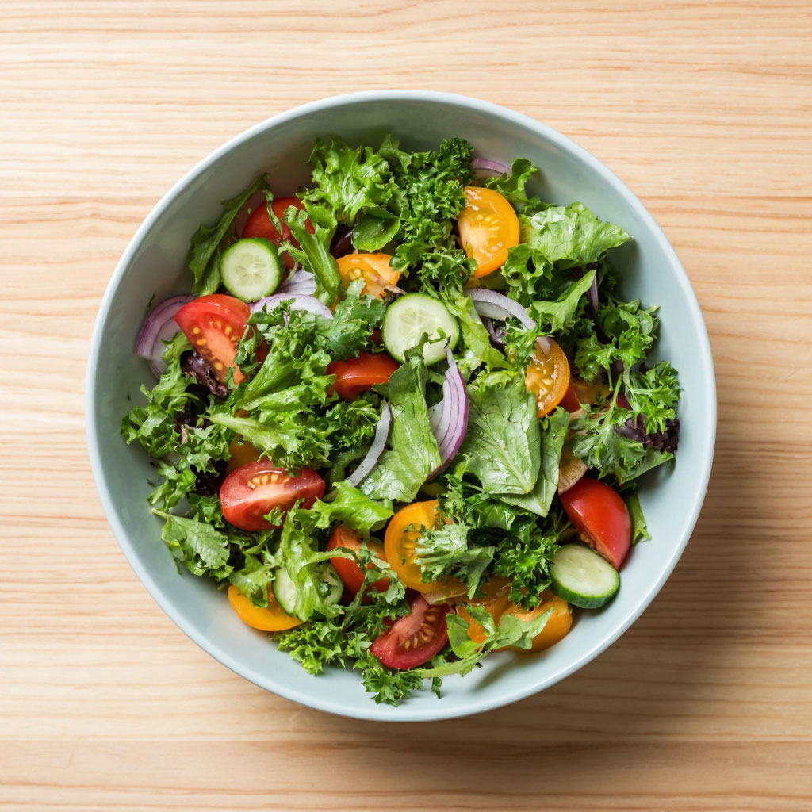
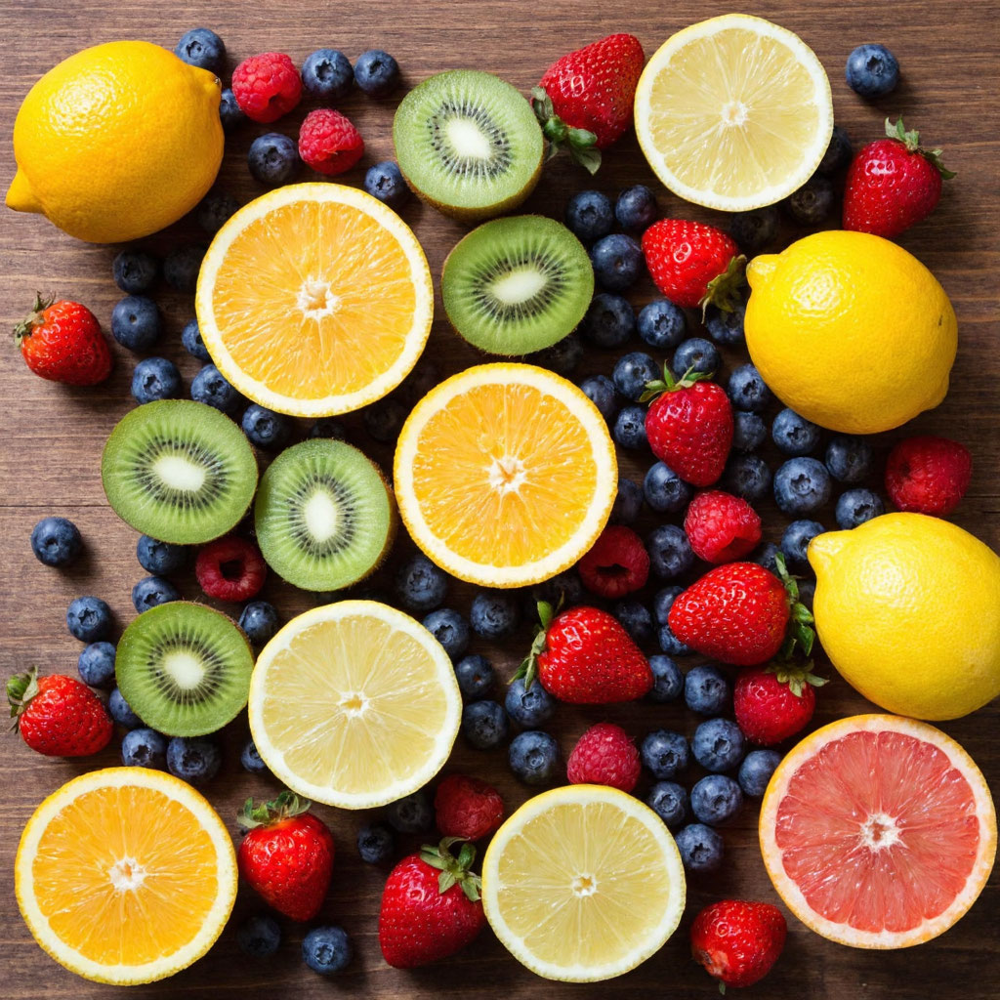
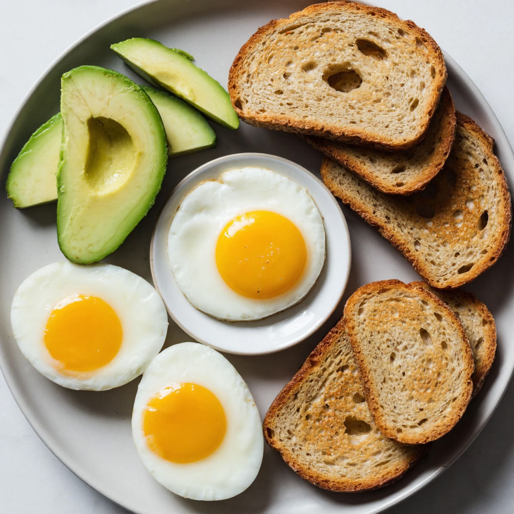
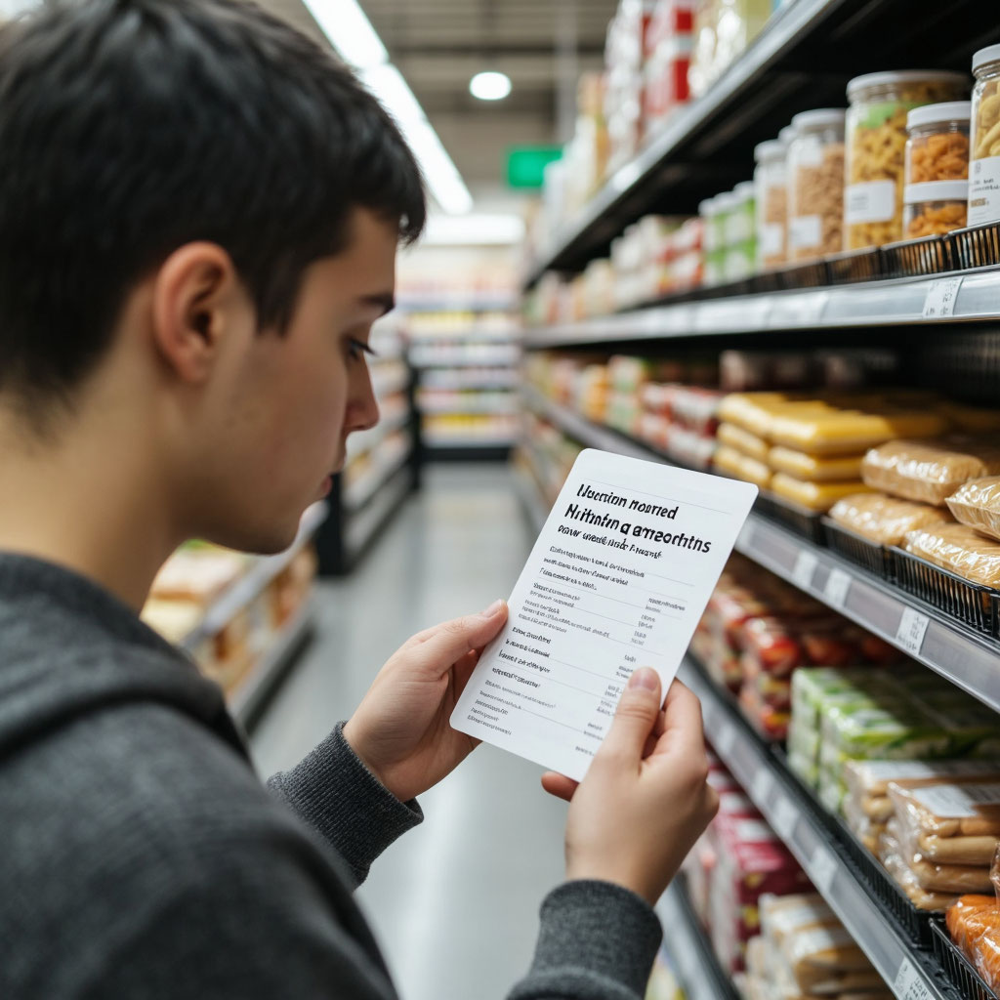
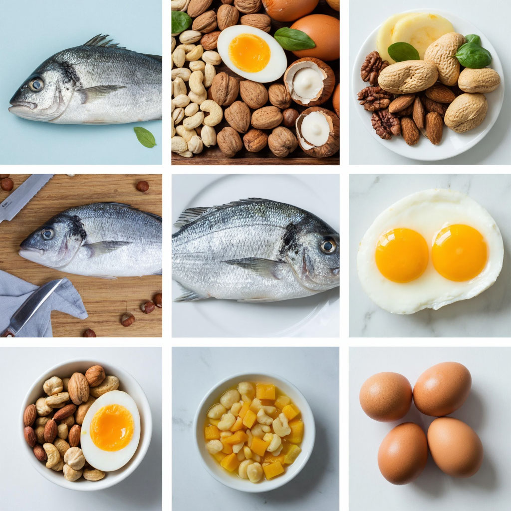
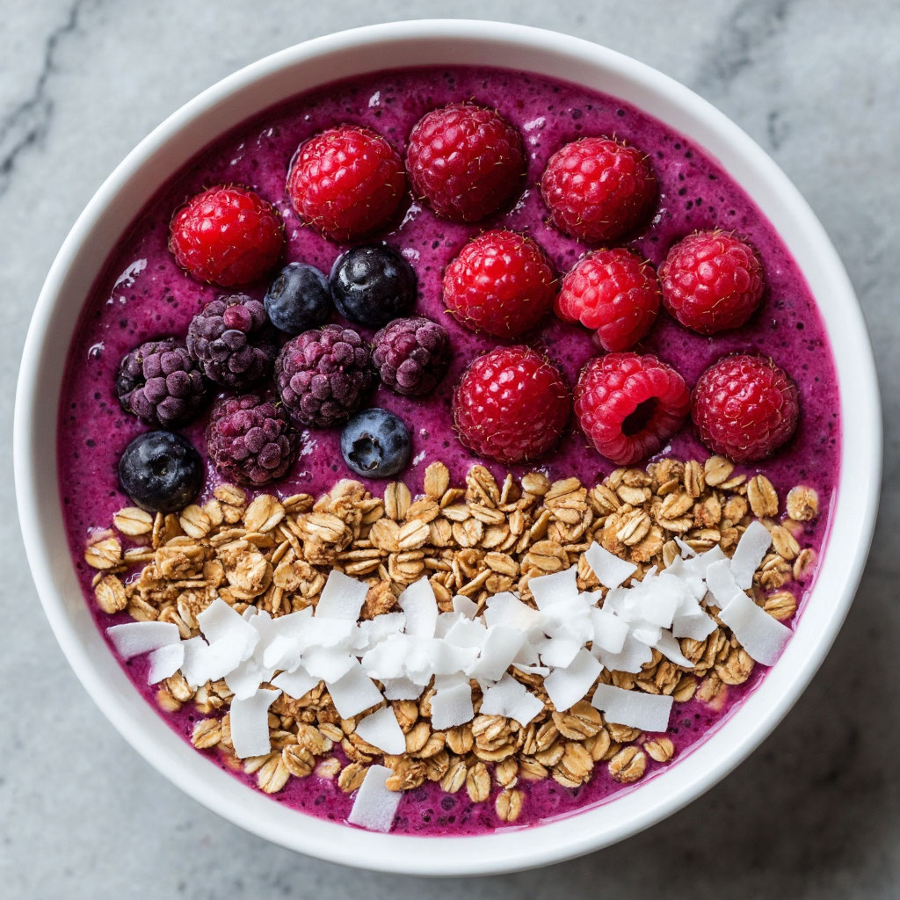

01 / ЗАПРОС
Комфортный вес
Питание без голодовок, срывов и избыточных ограничений.
Хотите чувствовать себя легче и увереннее? Помогу прийти к комфортному весу, наладить питание и разобраться в анализах. Без изнурительных диет — с вниманием к вам и опорой на медицинские знания.
Ваше здоровье — моя профессия.
Надоело готовить одно и то же?
Завтрак • Обед • УжинРулетка рецептовЧто сегодня едим?Крути рулетку — 300 блюд со всего мираЯ — Наталья Чернова, врач-терапевт и клинический нутрициолог с высшим медицинским образованием. Медицинская практика помогает мне смотреть на самочувствие комплексно, а не сводить всё к цифре на весах.
Вместе мы разбираемся в ваших целях, привычках и результатах обследований. Я помогаю выстроить питание с учётом предпочтений, режима дня и состояния здоровья — так, чтобы изменения было реально поддерживать.
Не «волшебная таблетка», а понятный план, основанный на вашем запросе и реальной жизни.

Питание без голодовок, срывов и избыточных ограничений.
Разбор режима, рациона и возможных причин усталости.
Индивидуальная коррекция питания при жалобах на пищеварение.

Помощь в интерпретации результатов обследований и выборе дальнейших шагов.
От первого шага до персонального сопровождения. Все детали обсудим до начала работы.
Если после консультации выберете сопровождение на месяц, 3 000 ₽ полностью зачтём в его стоимость.
Записаться ↗Если после первичной консультации за 3 000 ₽ решите продолжить работу, повторно платить за неё не нужно: доплата за месячное сопровождение составит 12 000 ₽.
Конкретные обследования и рекомендации определяются индивидуально. Описание услуг не заменяет медицинскую консультацию.
 Сегодня у меня день рождения! И да, нутрициологу тоже можно торт!Сегодня у меня день рождения! И да, нутрициологу тоже можно торт! 🎂🥳❤️ Сегодня мне 40! Интересно, как вы представляете день рождения врача-нутрициолога? На столе брокколи, вместо торта — обезжиренный творог, а гости боятся лишний кусочек съесть: вдруг хозяйка начнёт считать калории? 😁 Ну уж нет! У меня трое детей — подросток, школьник и малыш. Работа, семья,…
Сегодня у меня день рождения! И да, нутрициологу тоже можно торт!Сегодня у меня день рождения! И да, нутрициологу тоже можно торт! 🎂🥳❤️ Сегодня мне 40! Интересно, как вы представляете день рождения врача-нутрициолога? На столе брокколи, вместо торта — обезжиренный творог, а гости боятся лишний кусочек съесть: вдруг хозяйка начнёт считать калории? 😁 Ну уж нет! У меня трое детей — подросток, школьник и малыш. Работа, семья,…
 После сорока вес растёт. Значит, всё из-за гормонов?После сорока вес растёт. Неужели всё из-за гормонов? Джинсы, которые ещё недавно сидели прекрасно, вдруг начинают подозрительно плохо застёгиваться. И возникает вполне понятная мысль: «Ну всё. Возраст. Гормоны. Обмен веществ сломался». Я бы не спешила выносить организму такой суровый приговор. 😁 После сорока действительно происходят изменения, которые могут…
После сорока вес растёт. Значит, всё из-за гормонов?После сорока вес растёт. Неужели всё из-за гормонов? Джинсы, которые ещё недавно сидели прекрасно, вдруг начинают подозрительно плохо застёгиваться. И возникает вполне понятная мысль: «Ну всё. Возраст. Гормоны. Обмен веществ сломался». Я бы не спешила выносить организму такой суровый приговор. 😁 После сорока действительно происходят изменения, которые могут…
 Почки не болят: как тогда узнать, всё ли в порядке?Почки не болят. Значит, всё хорошо? «Поясница не болит, отёков нет. Наверное, с почками всё нормально». Хроническая болезнь почек может годами развиваться почти незаметно. Человек может не замечать, что функция почек снижается. Особенно внимательными стоит быть людям с сахарным диабетом, повышенным давлением, болезнями сердца или близкими родственниками с…
Почки не болят: как тогда узнать, всё ли в порядке?Почки не болят. Значит, всё хорошо? «Поясница не болит, отёков нет. Наверное, с почками всё нормально». Хроническая болезнь почек может годами развиваться почти незаметно. Человек может не замечать, что функция почек снижается. Особенно внимательными стоит быть людям с сахарным диабетом, повышенным давлением, болезнями сердца или близкими родственниками с…Прозрачный процесс: вы понимаете, что будет дальше, ещё до первой встречи.
Вы пишете мне и коротко рассказываете о своём запросе.
Заполняете анкету, при наличии присылаете результаты анализов.
На встрече обсуждаем ситуацию, вопросы и цели.
Получаете персональные рекомендации, меню и практические материалы.
При выбранном формате сопровождения — ответы на вопросы и корректировки.
Обсуждаем динамику и определяем следующие шаги.
Небольшие шаги и последовательность зачастую важнее строгих диет. Откройте интересующий принцип — без перегруженной стены из десяти карточек.
Полезные материалы в MAX ↗Чередуйте разные овощи, фрукты, крупы и источники белка. Так рацион проще сделать полноценным.
Чаще выбирайте цельнозерновой хлеб и крупы, если они хорошо переносятся.
Подбирайте белковые продукты в соответствии со своими потребностями, состоянием здоровья и предпочтениями.
Старайтесь ограничивать добавленный сахар и обращайте внимание на состав напитков и готовых продуктов.
Контролируйте общее количество соли в рационе, включая готовые продукты.
Потребность в жидкости индивидуальна; вода, чай и другие напитки тоже учитываются в общем потреблении жидкости.
Выбирайте частоту приёмов пищи, которая подходит вашему графику, самочувствию и потребностям.
По возможности чаще готовьте из обычных продуктов, не превращая редкие исключения в чувство вины.
Используйте разнообразные источники ненасыщенных жиров: орехи, рыбу, растительные масла.
Регулярный сон, движение и снижение стресса помогают поддерживать устойчивые привычки.
В бесплатном MAX-канале — понятные разборы здоровья, питания и жизненных привычек. Здесь — несколько направлений. Зачем подписаться ↗


Как сравнить сахара, белок и размер порции — без страшилок и запретов.
Прочитать разбор

Не обязательно. На первичной встрече мы можем обсудить питание и самочувствие, а необходимость дополнительных обследований определяется по ситуации.
Первичная консультация длится около 60 минут. Материалы после встречи обычно готовлю в течение 1–2 дней; подробности уточним при записи.
Я работаю с клиентами от 14 лет. Для несовершеннолетних условия консультации согласовываются с законными представителями.
Индивидуальные рекомендации, недельное меню, рецепты и список покупок с учётом предпочтений и ограничений.
Напишите, с какой задачей хотите разобраться. Я помогу выбрать подходящий формат консультации.
Основная запись и общение — в MAX. При желании можно написать лично в Telegram.
Написать в MAX ↗ Личный Telegram ↗ Позвонить Статьи, рекомендации и обновления — в моих блогах.
Давайте оставаться на связи!
Питание, рецепты и полезные материалы — выбирайте площадку, на которой вам удобно читать.